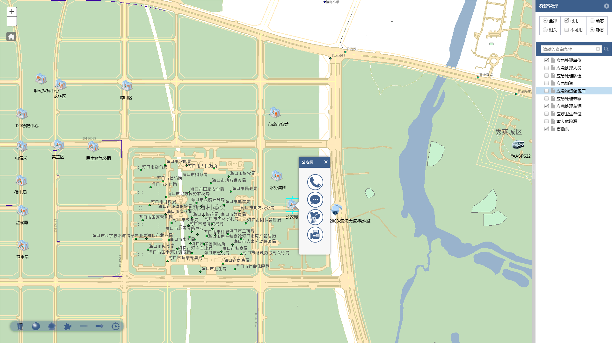
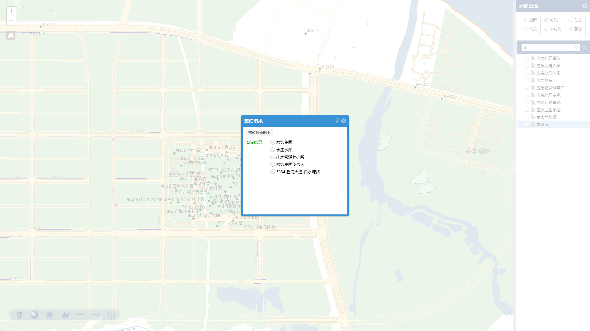
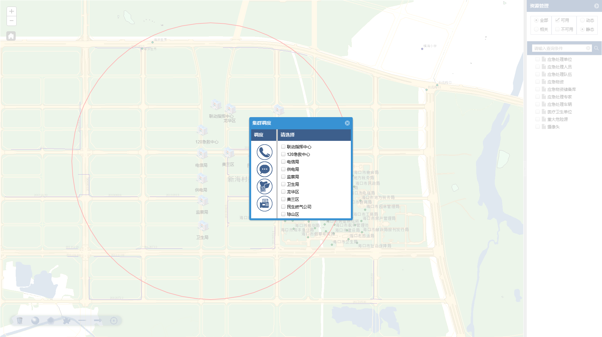
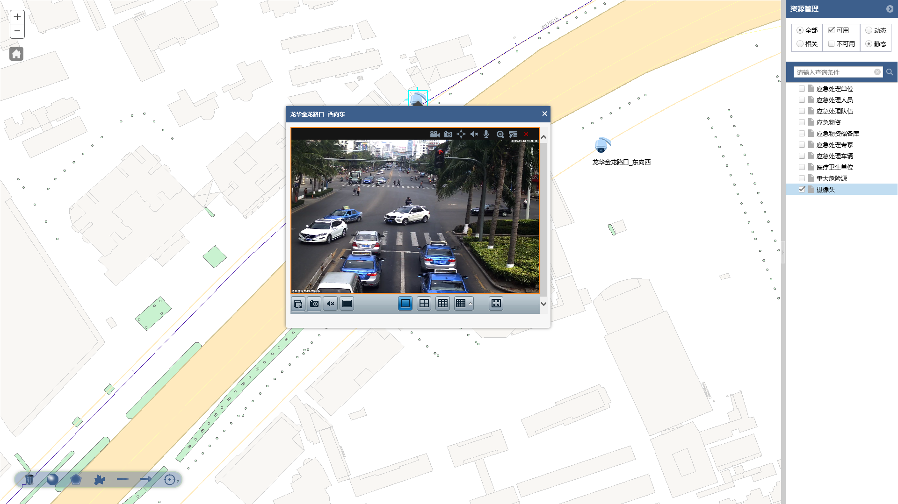
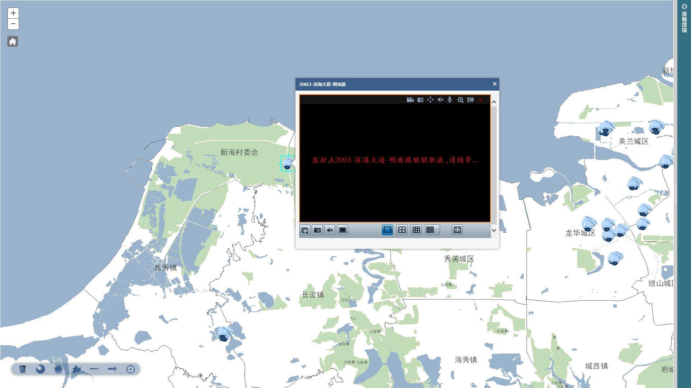
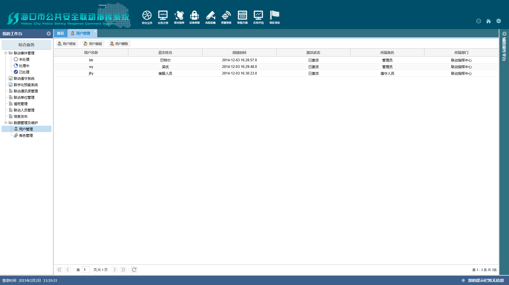
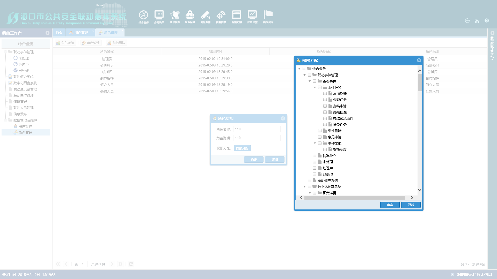
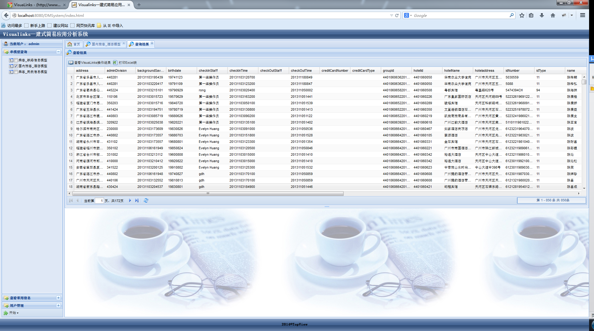
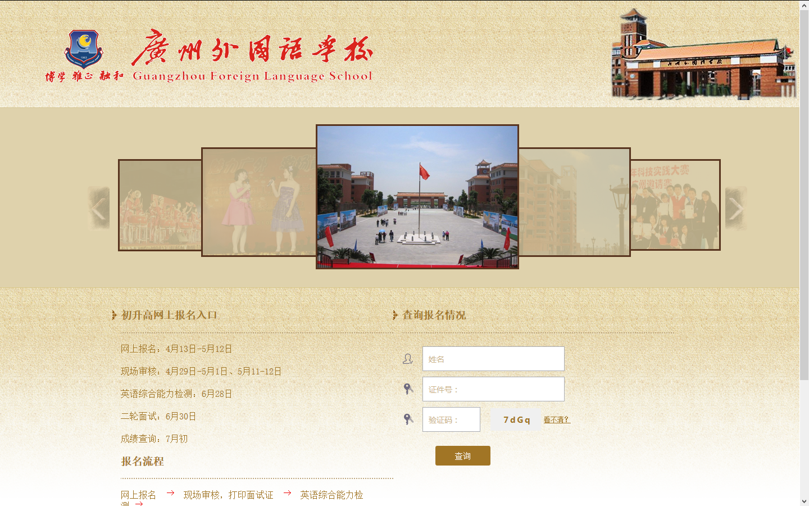

By Tim Tsang form Guangdong University of Technology
我来自广东茂名，
就读于广东工业大学计算机学院，
性格开朗，热爱前端，爱好书法与摄影，爱好篮球运动，
能吃苦耐劳，严谨，敬业，具有扎实的专业基础，
有较强的责任心和协作能力及团队合作精神。
有一定的项目经验，具备较强的沟通能力，
不畏惧困难, 可以承受较大的工作压力。
本人乃大三屌丝一枚，
于2016年6月毕业。
姓名：曾家栩
学校：广东工业大学
专业：计算机科学与技术
学历：2012级本科
移动电话：13611480619
E-mail：tim_tsang@yeah.net
求职意向：WEB前端开发实习生
github：https://github.com/TimTsang
博客：http://blog.csdn.net/tim_tsang
实践经历： ● 广东工业大学TopView工作室前端开发组成员(2013.09——现在) 主要职责：WEB前端开发、新人培训 ● 广东工业大学校党委宣传部校学生新闻中心摄影部部长(2013.06——2014.06) 主要职责：部门内日常事务的管理、校报照片的提供、新人培训 获奖状况： ● 2012年“精灵杯”院级辩论赛团体亚军 ● 2012~2013年度校级优秀学生二等奖学金 ● 2013年第十八届校园文化艺术节之现场书画大赛，摄影组二等奖，硬笔组优胜奖
● JavaScript ：基本熟悉JavaScript编程，了解ExtJS框架 ● Ajax ：了解ExtJS，JQuery主流JavaScript框架的Ajax异步编程 ● HTML/CSS ：基本熟悉DIV+CSS页面布局以及页面性能优化，
了解HTML5/CSS3 ● 服务器端 ：了解Java面向对象编程技术 ● 调试工具 ：熟悉Firebug以及Chrome开发者工具 ● 其他技能 ：基本熟悉Prezi、Dreamweaver、Rational Rose、
Photoshop等软件的使用，有较好的英文文档阅读能力
一. 海南省海口市公共安全联动指挥系统 2014/10--目前继续开发中
项目描述：该系统是海南省海口市的公共安全联动指挥系统，系统同样也集成了几大
厂商的不同系统：视频监控与会议、网络电话与传真、GPS车辆导航，
同时根据国家对应急指挥调度系统的规定，拥有一套应急指挥调度的完善
的流程，并结合GIS技术，以地图的方式实现资源的展示与调度。
开发技术：java、SSH、web service、oracle、ExtJS、JQuery、dojo、各硬件商API
我的工作：1、学习部分arcgis for js技术（足够项目使用），实现前端ExtJS与
Arcgis地图之间的数据对接，调用地图组件实现对Arcgis地图的操作；
2、在Arcgis地图上视频、电话与后台之间的数据对接以及现场调试，
配合后台实现在Arcgis地图上进行资源显示以及资源调度；
3、配合后台对项目中涉及到密码部分进行RSA加密，配合后台实现系统中
的用户管理以及权限管理模块；
4、帮助其他队员进行其他前端页面的开发以及部分页面的调试
海南省海口市公共安全联动指挥系统部分截图一
海南省海口市公共安全联动指挥系统部分截图二
海南省海口市公共安全联动指挥系统部分截图三
海南省海口市公共安全联动指挥系统部分截图四
海南省海口市公共安全联动指挥系统部分截图五
海南省海口市公共安全联动指挥系统部分截图六
海南省海口市公共安全联动指挥系统部分截图七
海南省海口市公共安全联动指挥系统部分截图八
Visual links一建式简易应用系统截一
广州外国语学校招生报名系统截图一
二 . Visual links一建式简易应用系统 2014/07--2014/10
项目描述：该系统是广东省公安厅内部人员使用的，通过数据库的数据，经过特定
的算法查找出人与人之间的联系，确定犯罪嫌疑人的一个系统，并通过
visual links以图形形式展示出这些关系。
开发技术：java、SSH、oracle、ExtJS、visual links IPA、
我的工作：整个前端界面的负责人，整个前端界面框架的搭建，与后台进行数据
交互，动态展现在前端界面，实现异步操作。
三 . 广州外国语学校招生报名系统 2013/05--2014/06
项目描述：该 WEB 项目是广州外国语学校的招生报名系统，该系统主要模块包括
招生报名、报名审核、试室及准考证生成、以及系统权限管理。
开发技术：Java、web service、SSH、MySQL、JQuery、JavaScript、HTML/CSS
我的工作：负责报名首页的设计与代码实现，参与报名表单的设计与代码实现，
负责准考证的设计以及代码实现，与后台对接，以及前端界面维护，
修复bug。